Ma spirale · ton outil d’introspection profonde
Ce qui se répète dans ta vie a une histoire. Vois-la, et libère-toi.
Quand quelque chose remonte, tu as enfin un endroit où aller : tu déposes ce que tu ressens, tu vois d’où ça vient dans ta vie et ta lignée, et tu le libères, à ton rythme.
Essayer 7 jours offertsPuis 10 € 4,99 € par mois · offre de Noël jusqu’au 31 décembre · sans engagement
Voir d’abord la démo de Léa · sans inscription, 2 minutes
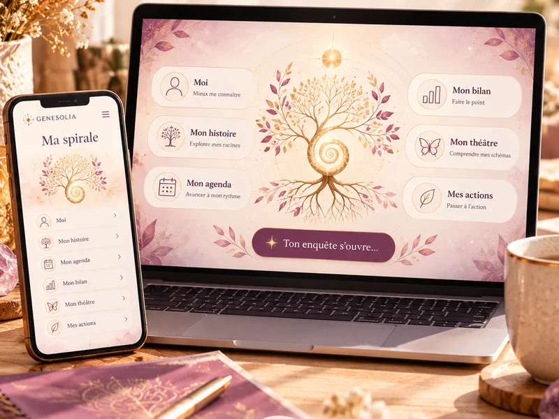
Tu te reconnais ?
Les visages changent. La scène, elle, revient.
- Toujours la même histoireEn couple, au travail, avec l’argent : d’autres personnes, la même situation.
- Une émotion trop grandeTu réagis bien plus fort que ce qui vient d’arriver, et tu ne sais pas d’où ça sort.
- Tu as compris, et pourtant…Tu sais d’où ça vient. Et ça recommence quand même.
- Tu ne sais pas par où commencerPeu de souvenirs, une famille mal connue, des mots qui ne viennent pas.
Ce n’est pas un hasard, ni un défaut chez toi : c’est un schéma. Et un schéma, ça se libère.
Pourquoi ça se répète
Ce que tu vis a souvent commencé avant toi
Une peur, une façon d’aimer, un rapport à l’argent ou au corps se transmettent d’une génération à l’autre, sans être dits. Tant qu’on ne les voit pas, on les rejoue : aux mêmes âges, dans les mêmes rôles, avec les mêmes blessures.
Ma spirale te montre ces fils. Ta frise de vie retrouve la première fois. Ta frise familiale montre qui l’a vécu avant toi. Et ce qui devient visible peut enfin se libérer.
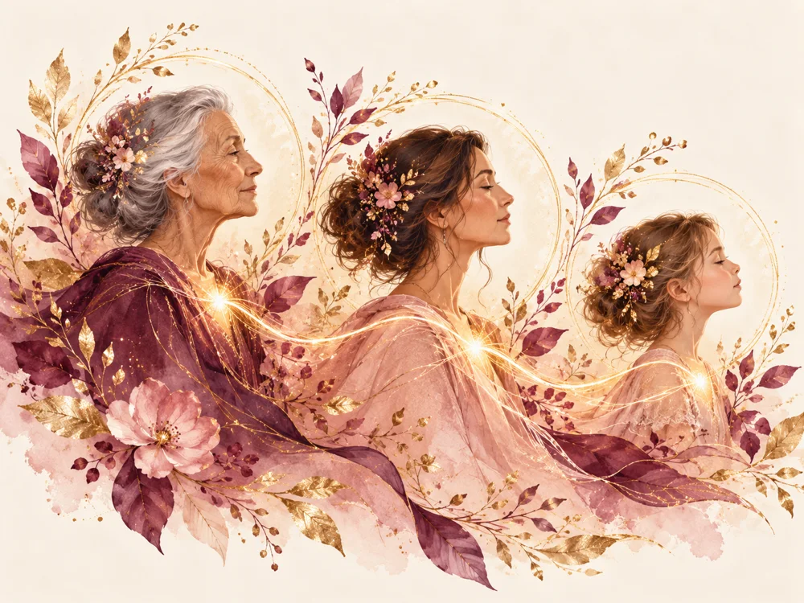
La solution
Trois temps, à ton rythme
Un travail sur toi, quand tu en as besoin : le soir, après une dispute, au réveil d’un rêve.
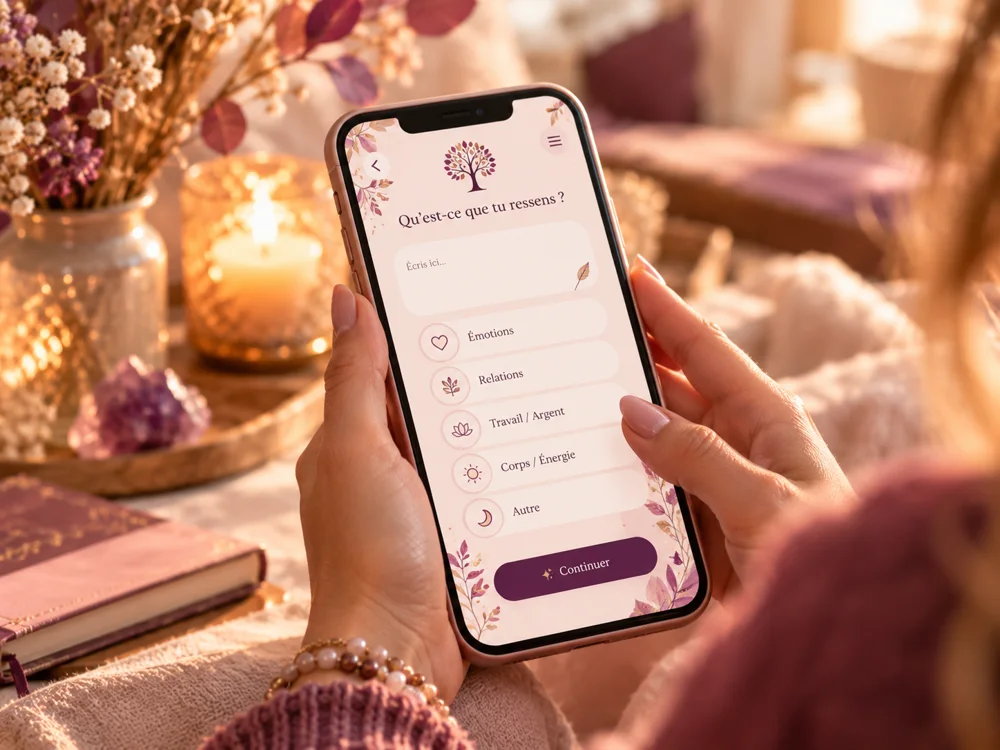
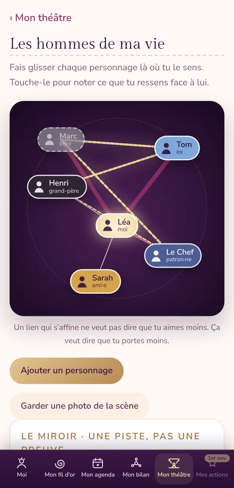
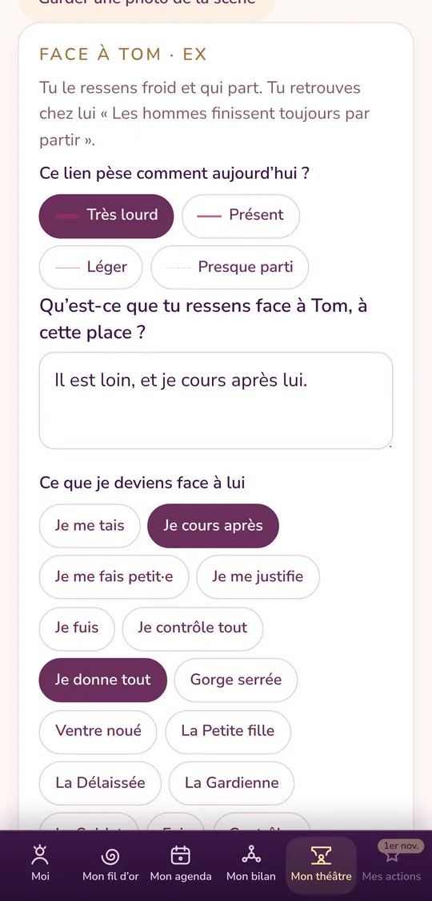
Mon théâtre
Tu le sens froid… tiens, comme ton père.
Place les personnes de ta vie et de ta lignée autour de toi, plus près ou plus loin. Note ce que tu ressens de chacun. Un fil doré relie ceux qui se ressemblent : tu vois enfin ce qui se rejoue.
- C’est ta vision, avec ton vécu : ici, on regarde ce qui se rejoue en toi.
- Un fil doré relie ceux de ta vie que tu ressens comme quelqu’un de ta lignée : « Tu ressens Tom comme tu ressens ton père : froid. »
- Des photos datées de ta scène, pour voir les liens s’affiner, libération après libération.
La démo, en détail
Cinq étapes, à ton rythme
Chaque ressenti rejoint un schéma, ce qui se répète. Ton schéma avance tout seul dans les 9 étapes du cycle, de l’Émergence à la Renaissance.
- VoirTu déposes ce que tu ressens en 3 questions : ce qui s’est passé, ton émotion, où tu la sens dans ton corps.
- Où est-elle ?Ta frise de vie retrouve la première fois. Ta frise familiale montre qui l’a vécu avant toi.
- LibérerLa mémoire de ta vie, puis celle de ta lignée, avec un protocole rempli à partir de ta fiche.
- L’intentionCe que tu veux à la place, posé du plus profond de toi. Il revient à chaque nouvelle lune.
- RéapprendreTon suivi, tes gestes, ta note sur 10. À 10, ton schéma devient spirale.
Mes actions
Quand tu ne sais pas, tout est prêt
Chaque protocole se remplit avec ta fiche : ton âge la première fois, la personne de ta lignée, le nom de ton schéma. Tu n’as rien à inventer.
- Trouver ma première foisRetrouver un ressenti à sa source : l’âge que tu te sens, une scène, même floue.
- Libérer la mémoire de ma vie, puis de ma lignéeRetrouver la partie de toi restée figée, et rendre ce qui ne t’appartient pas, en gardant la force des tiens.
- Si ça monte fortRevenir ici et maintenant, avec la respiration guidée. À 8 sur 10 ou plus, l’appli te le propose d’elle-même.
Et à chaque question où l’on peut bloquer, un « Je ne sais pas » ouvre une aide : des débuts de phrase, le corps, les périodes de ta vie.
Dans ta poche
Ton chemin se voit
Ta frise, ton bilan, tes schémas devenus spirale : ton chemin se voit. Un lien qui s’affine ne veut pas dire que tu aimes moins. Ça veut dire que tu portes moins.
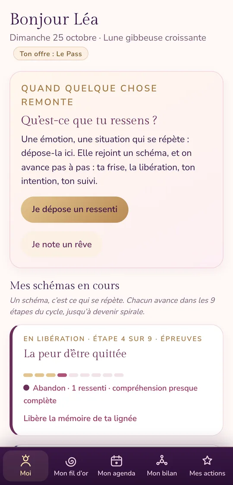
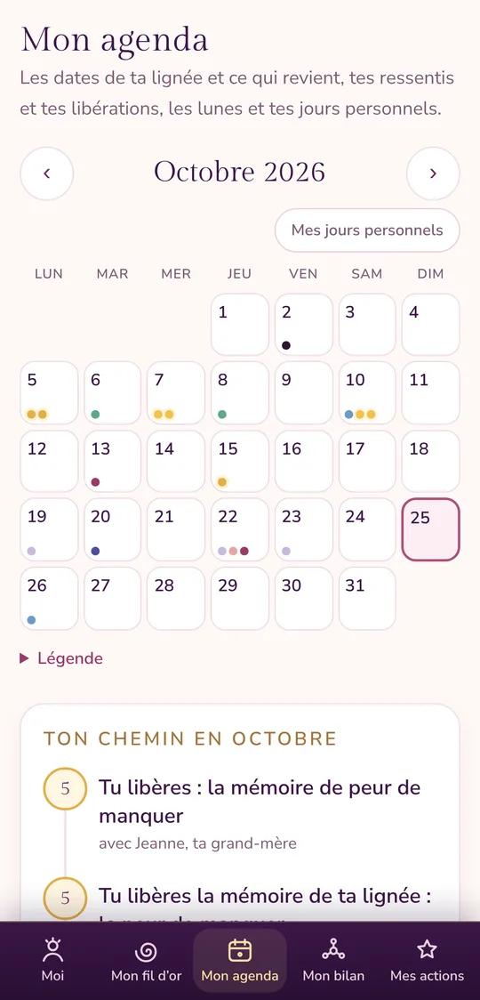
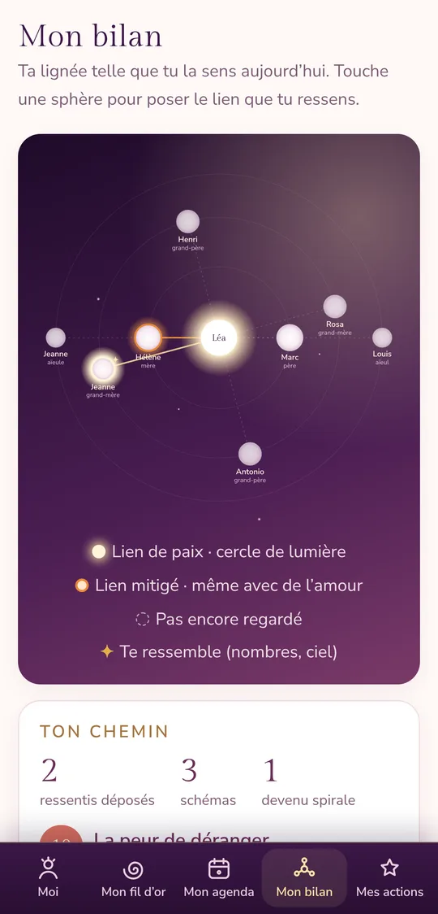
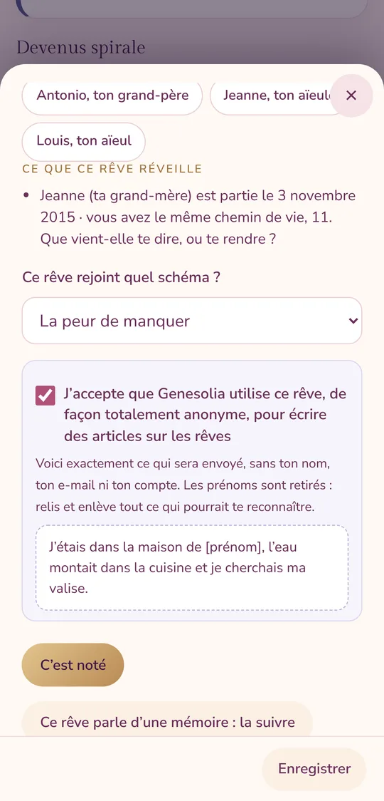
Sur ordinateur
Ton espace en grand
Sur ordinateur, tes espaces sont à gauche, et chaque écran s’ouvre sur deux colonnes. Tout ce que tu écris se retrouve sur ton téléphone.
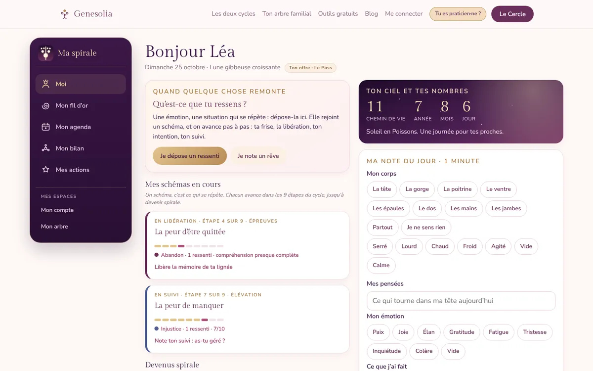
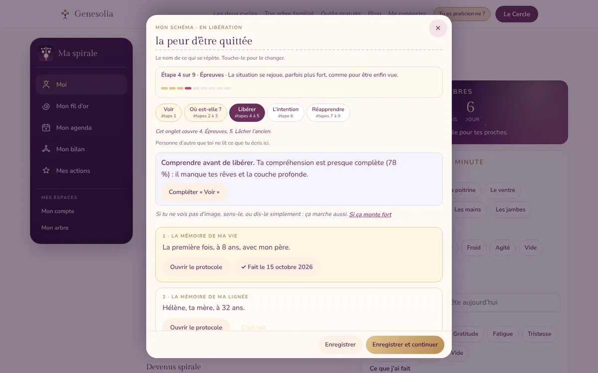
Tes rêves
Ce que tes nuits te disent
Note tes rêves au réveil : les images, les symboles, les personnes de ta lignée qui y viennent. L’appli propose des pistes, jamais des certitudes : le sens d’un rêve, c’est d’abord toi qui le donnes.
Si tu le souhaites, tu peux cocher « J’accepte de partager ce rêve avec Genesolia, de façon anonyme ». Il servira à écrire des articles sur le blog, pour aider d’autres personnes à comprendre, quand c’est possible, le sens de leurs rêves.
- Tu vois exactement le texte qui partira.
- Les prénoms, e-mails et numéros sont retirés tout seuls.
- Ni ton nom ni ton compte ne sont envoyés. Sans la case, ton rêve reste privé.
Pendant tes 7 jours offerts
Ce que tu auras en une semaine
- Ton premier schéma nommé, avec ce qui le déclenche et où tu le sens.
- Ta frise de vie, avec la première fois que c’est arrivé.
- Ta première scène dans ton théâtre : les personnes de ta vie, et celles de ta lignée qu’elles te rappellent.
- Un protocole de libération fait jusqu’au bout, et ta note sur 10 avant et après.
- Ton intention, ce que tu veux vivre à la place.
Tu arrêtes quand tu veux, en un clic, avant ou après les 7 jours.
Elles l’utilisent
Ce qu’elles en disent
« Incroyablement riche et complet, je m’y retrouve complètement. »
Aurélie, 36 ans · Vannes (56)
« Fonctionnelle, utile, et elle permet de travailler seule sur soi au bon moment surtout, et quand on le veut. Même avec des montées émotionnelles, ça permet de se recentrer et de prendre de la hauteur directement. »
Mélanie, 44 ans · Toulouse
« J’adore, c’est féminin, c’est joli et c’est facile à utiliser, trop bien ! »
Caroline, 39 ans
Qui a créé Ma spirale
Je suis Laura
Je suis la créatrice de Genesolia. J’ai conçu Ma spirale pour qu’au moment où quelque chose remonte, tu ne sois plus seule avec : un endroit à toi pour déposer, comprendre d’où ça vient, et t’en libérer, sans attendre un rendez-vous.
Tout ce que tu y trouves, la frise, le théâtre, les protocoles, je l’ai pensé pour qu’on puisse avancer seule, à son rythme, avec douceur.
✦ Offre de Noël
Commence aujourd’hui
Ma spirale
10 € 4,99 € par mois
7 jours offerts, puis 4,99 € par mois pour toute inscription jusqu’au 31 décembre. Ce prix te reste tant que tu restes.
- Ton théâtre, ta frise de vie et ta frise familiale
- Tous les protocoles de libération, et la respiration si ça monte fort
- Ton agenda, tes rêves, ta note du jour
- Sur téléphone et ordinateur, dans ton espace privé
Sans engagement : tu arrêtes en un clic. J’ai déjà un compte
Le Cercle
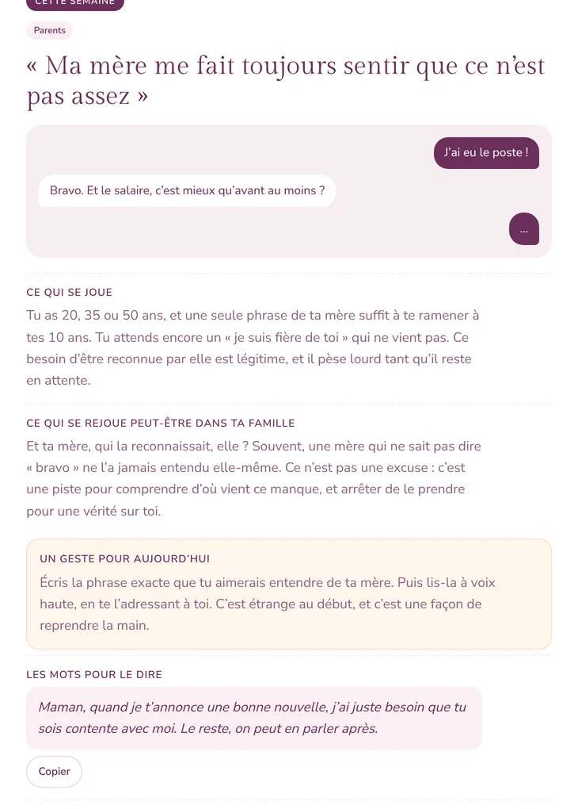
Un aperçu du carnet en ligne29 € par mois, sans engagement
Si tu préfères être guidé·e : ton parcours en 12 étapes, 2 séances audio par mois et la formation « Sors de la boucle ».
Découvrir Le Cercle1er mois offert, aucune carte demandée.
Questions fréquentes
Que se passe-t-il après les 7 jours ?
Ton abonnement continue à 4,99 € par mois. Tu peux l’arrêter à tout moment, en un clic, avant ou après la fin des 7 jours.
Faut-il installer quelque chose ?
Non. Ma spirale s’ouvre dans ton navigateur. Sur ton téléphone, ajoute-la à ton écran d’accueil : elle s’ouvre alors comme une appli, avec sa barre en bas.
Je n’ai pas de souvenirs de mon enfance. Est-ce pour moi ?
Oui. Le protocole « Trouver ma première fois » t’aide à laisser venir l’âge que tu te sens, et « avant mes souvenirs » est une vraie réponse : elle t’oriente vers ta lignée.
Je connais mal ma famille.
Tu peux avancer quand même. L’appli te propose les questions à poser à tes proches, et si tu ne connais pas ta lignée, tu travailles avec la famille qui t’a élevé·e.
Et si ça revient après une libération ?
Ce n’est pas un retour en arrière : c’est souvent une couche plus profonde qui se montre. Tu rouvres ton schéma, et le protocole « La couche profonde » t’accompagne.
Qui peut lire ce que j’écris ?
Tout reste dans ton espace privé. Seuls les rêves que tu choisis de partager sortent de ton espace, sans ton nom.
Quelle différence avec Le Cercle ?
Ce sont deux offres différentes. Ma spirale est ton outil, à ouvrir quand tu en as besoin. Le Cercle est un parcours guidé, une étape chaque mois, avec des séances audio et la formation.
Est-ce que ça remplace un·e professionnel·le ?
Non. Ma spirale propose une lecture symbolique et des exercices d’introspection, à faire seul·e, à ton rythme. Elle ne remplace pas un avis médical ou psychologique. Si une histoire est trop lourde à porter, parles-en à une personne de confiance ou à un·e professionnel·le de l’accompagnement.
La prochaine fois que ça remonte, tu sauras où aller.
7 jours offerts, puis 4,99 € par mois jusqu’au 31 décembre. Sans engagement.
Essayer 7 jours offertsOu voir d’abord la démo de Léa